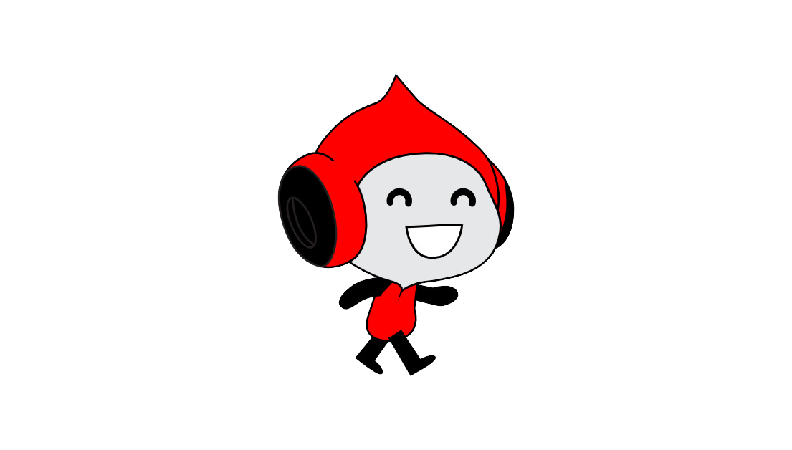

vegetti:
O jogador do Vasco chamado "Vegetti" é Mauro Vegatti, um atacante argentino que atuou pelo clube em 2014. Conhecido pelo seu faro de gol e presença de área, Vegatti teve uma breve passagem pelo time carioca, destacando-se por sua capacidade de finalização.

gabi gol:
Gabigol, nome de futebol de Gabriel Barbosa, é um atacante brasileiro. Surgiu como uma jovem promessa no Santos, onde se destacou pela sua capacidade de finalização. Em 2016, foi para o Inter de Milão, mas voltou ao Brasil para brilhar no Flamengo, com grandes atuações e títulos, incluindo a Libertadores e o Campeonato Brasileiro. É conhecido pelo seu estilo de jogo arrojado e presença de área decisiva.